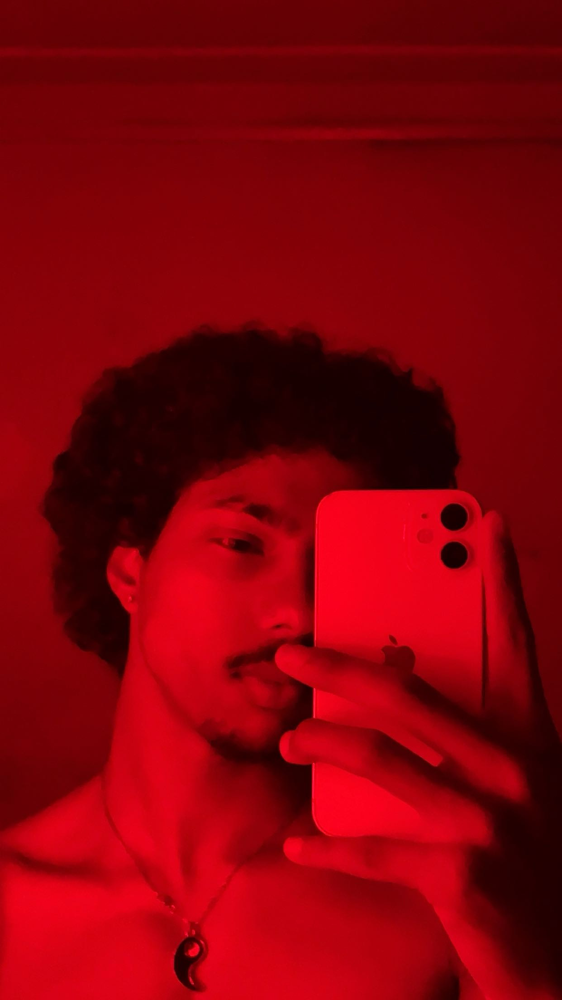

First of all I go by the names James D'costa, i am 21 years old. i love solving problems and also enjoy dicovering new things. My main goal for this course is to reach maximum capability to solve any problem that comes my way. I also want to become a senior software engineer.
I enjoy playing sports and to be honest im an all rounded sports person. I have achieved some of the highest achievements in my careers as a sportsman and still want to get to higher limits. i also do dj from time to time. I have a great personality and i am a very friendly individual. i dont settle for anything less than my potentials. I am aslo a very competitive person but not to an extent of being serious abt it. Although i have the memory of a gold fish to remember people but forgive me in advance. There's alot more to me than i can say but thats for you to find out when you start to really get to know me.. THANK YOU AND HAVE A GREAT DAY! OH AND ONE THING I TRULY APOLOGISE FOR THE LARGE PHOTO IM NEW TO THIS <3!
